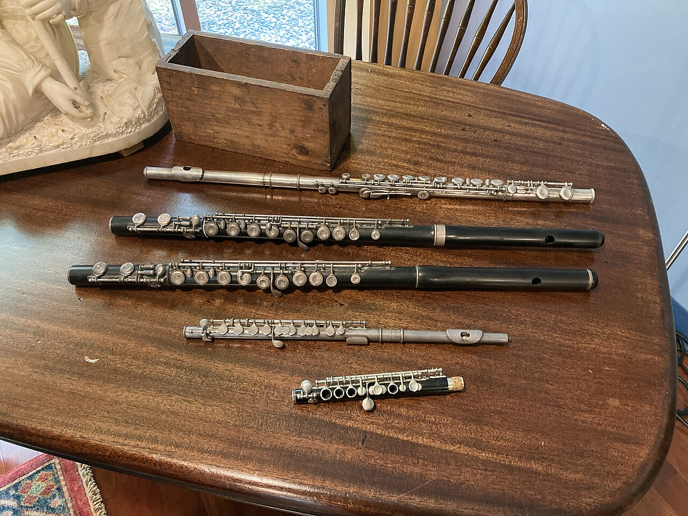
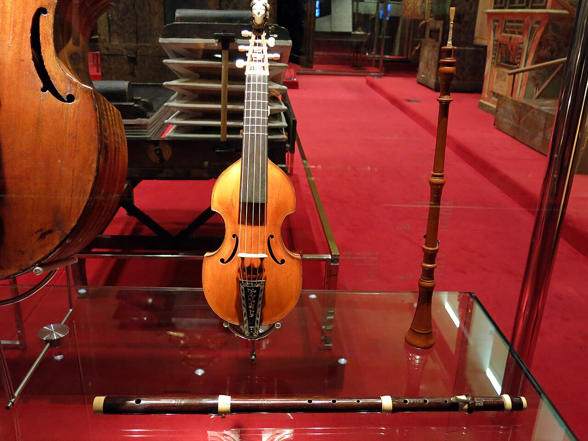
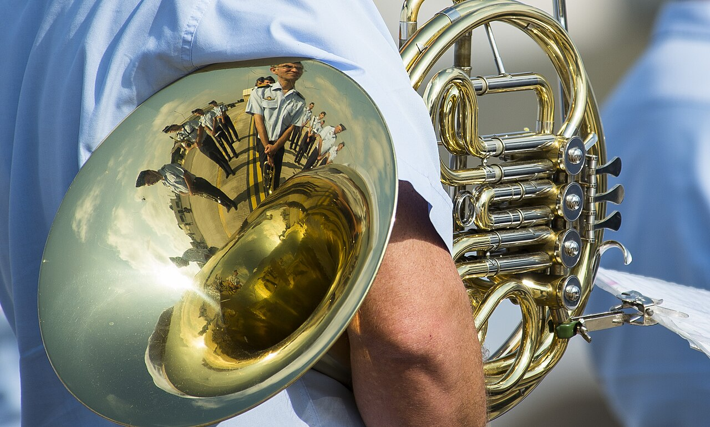

Музыка · 40-бөлім · Үрмелі аспаптар Music · Section 40 · Winds & Brass Музыка · Раздел 40 · Духовые инструменты
🎺 Ағаш және мыс үрмелі аспаптар
🎺 Woodwind and Brass Instruments
🎺 Деревянные и медные духовые
Үрмелі аспаптарда дыбыс түтік ішіндегі ауа бағанасының тербелуінен туады. Олар ағаш және мыс болып бөлінеді. In wind instruments the sound is born from the vibration of a column of air inside a tube. They split into woodwind and brass. У духовых инструментов звук рождается от колебания столба воздуха внутри трубки. Они делятся на деревянные и медные.
🌬️ Үрмелі аспап қалай дыбыс шығарады? 🌬️ How a Wind Instrument Sounds 🌬️ Как звучит духовой инструмент?
Музыкант түтікке ауа үрлейді — ішіндегі ауа бағанасы тербеле бастайды. The player blows air into the tube — the column of air inside begins to vibrate. Музыкант вдувает воздух в трубку — столб воздуха внутри начинает колебаться.
Тербелетін ауа бағанасы дыбыс толқынын тудырады — осы дыбыстың көзі. The vibrating air column creates a sound wave — that is the source of the tone. Колеблющийся столб воздуха создаёт звуковую волну — это и есть источник звука.
Түтіктің ұзындығын өзгертіп (тесіктер не клапандар), дыбыстың биіктігін реттейді. By changing the length of the tube (holes or valves), the player sets the pitch. Меняя длину трубки (отверстия или клапаны), регулируют высоту звука.
💡 Барлық үрмелі аспаптарда дыбыстың негізі бір: түтіктегі ауаның тербелісі. Айырмашылық — ауаны қалай тербелтуде. 💡 In every wind instrument the basis of the sound is the same: the vibration of air in a tube. The difference is in how the air is set vibrating. 💡 У всех духовых основа звука одна: колебание воздуха в трубке. Разница — в том, как заставляют воздух колебаться.
🪵 Ағаш үрмелі аспаптар 🪵 The Woodwind Family 🪵 Деревянные духовые

Флейта Flute Флейта
жарық, мөлдір, биік (тесік арқылы үрлеуден) bright, clear, high (blowing across a hole) светлый, прозрачный, высокий (звук от вдувания через отверстие)

Гобой Oboe Гобой
мұрындық, мәнерлі; оркестр осыған бапталады (қос тіл) nasal, expressive; the orchestra tunes to it (double reed) носовой, выразительный; по нему настраивается оркестр (двойная трость)
Кларнет Clarinet Кларнет
икемді, жылы (жалғыз тіл) flexible, warm (single reed) гибкий, тёплый (одинарная трость)
Фагот Bassoon Фагот
төмен, топтың «атасы» low, the "grandfather" of the group низкий, «дедушка» группы
📌 Ағаш үрмелі аспаптарда дыбыс тесік арқылы үрлеуден (флейта) немесе тілдің (трость) дірілінен туады. Биіктік — бүйір тесіктерін ашып-жабумен реттеледі. 📌 In woodwinds the sound comes from blowing across a hole (flute) or from a vibrating reed. Pitch is set by opening and closing side holes. 📌 У деревянных духовых звук возникает от вдувания через отверстие (флейта) или от колебания трости. Высоту меняют, открывая и закрывая боковые отверстия.
🥇 Мыс үрмелі аспаптар 🥇 The Brass Family 🥇 Медные духовые

Труба (керней) Trumpet Труба
жарқын, жалтыр, биік bright, brilliant, high яркий, блестящий, высокий

Валторна French horn Валторна
жұмсақ, асыл, «орман» дыбысы soft, noble, a "forest" sound мягкий, благородный, «лесной»
Тромбон Trombone Тромбон
қуатты, жылжымалы кулисамен powerful, with a sliding slide мощный, с выдвижной кулисой
Туба Tuba Туба
ең төмен дыбыс the lowest sound самый низкий
📌 Мыс үрмелі аспаптарда дыбыс мундштуктегі еріннің дірілінен туады. Биіктік клапандармен (труба, валторна, туба) немесе кулисамен (тромбон) реттеледі. 📌 In brass the sound comes from the vibration of the lips in a mouthpiece. Pitch is set with valves (trumpet, horn, tuba) or a slide (trombone). 📌 У медных духовых звук рождается от вибрации губ в мундштуке. Высоту меняют клапанами (труба, валторна, туба) или кулисой (тромбон).
🎧 Тембрлерді салыстыру: ағаш пен мыс 🎧 Compare Timbres: Wood vs Brass 🎧 Сравните тембры: дерево и медь
🎧 батырманы басып, әр аспаптың дыбыс «түсін» тыңдаңыз tap a button and hear each instrument's sound "colour" нажмите кнопку и послушайте «цвет» звука каждого инструмента
💡 Дыбыс биіктігі ұқсас болса да, әр аспаптың тембрі бөлек: флейта — таза әрі жұмсақ, гобой — мәнерлі, труба — жарқын әрі өткір, валторна — толық әрі асыл. 💡 Even at a similar pitch, each instrument has its own timbre: the flute is pure and soft, the oboe expressive, the trumpet bright and sharp, the horn full and noble. 💡 Даже при близкой высоте у каждого инструмента свой тембр: флейта — чистая и мягкая, гобой — выразительный, труба — яркая и резкая, валторна — полная и благородная.